Each scene is a fixed seed and matchup. Left: main before this pass. Right: after. The clips are rendered in software (SwiftShader) in Chromium at 640×360, 30 fps, with the camera following the scene's focus ships. The numbers under each scene come from the headless motion report, scripts/motion-report.cjs. The last row of each table comes from the clip's own browser run, and that war can drift from the headless one over time. Full definitions are in MOTION.md.
| criterion | target | before | after | result |
|---|---|---|---|---|
| Reversals, gunboats and capitals (every fleet), per ship-minute | 0 | 13 in 1972 ship-min; worst Yautja frigate 0.079, Federation frigate 0.036, Empire frigate 0.022 | 0 in 2046 ship-min; worst none | PASS |
| Reversals, any class in any fleet, per ship-minute | < 0.2 | worst Tesla hero 1.679; overall 0.212; 38 fleet-classes at or over 0.2 | worst Shadows fighter 0.069; overall 0.004 | PASS |
| Shuttle: worst share of any 10 s window, any ship | <= 5% | 88.0%; 324 ships over 5% | 12.0%; 17 ships over 5% | FAIL |
| p95 angular jerk per class (rad/s^3), at or below baseline | <= baseline | leviathan 0.38; capital 0.32; light 9.02; fighter 11.89; hero 11.89; frigate 10.84; mid 13.03 | leviathan 0.38 -> 0.09; capital 0.32 -> 0.06; light 9.02 -> 2.79; fighter 11.89 -> 5.69; hero 11.89 -> 5.43; frigate 10.84 -> 0.39; mid 13.03 -> 1.33 | PASS |
| p95 angular jerk, frigates | <= 50% of baseline | - | 10.84 -> 0.39 (4%) | PASS |
| Spinning in place, hulls of 80 m or longer (events) | 0 | 64 (148.8 s) | 0 (0.0 s) | PASS |
| Speed holds of 5 s or more, small and mid-size craft | <= 10% | fighter 15.8%; light 23.2%; mid 10.7%; frigate 32.8%; hero 19.7% | fighter 0.7%; light 2.5%; mid 7.0%; frigate 1.6%; hero 1.9% | PASS |
| Capitals: max turn rate, acceleration and braking against the hull's limits; reversals | <= 1.05x each; 0 reversals | turn 1.00x, accel 18.26x, brake 465.73x; 0 reversals | turn 1.00x, accel 1.00x, brake 1.00x; 0 reversals | PASS |
| Squadron cohesion inside the band, share of squad-time outside dogfights and routs | >= 80% overall and in every fleet | 43.2% overall; worst Minbari 12.4% (parade 0%, dissolved 74%) | 70.0% overall; worst Minbari 24.4% (parade 0%, dissolved 64%) | FAIL |
| Squadmates' motion signatures: smallest pairwise distance in any squad (feature sd units) | >= 0.25 in every squad | min 0.032, median squad min 0.363; 202 of 915 squads below | min 0.084, median squad min 0.381; 159 of 915 squads below | FAIL |
| Fleet from motion alone: held-out accuracy (per-class models, ship identity hidden) | >= 3x chance and >= baseline +15 points and 1.5x baseline | 24.6% vs chance 5.6% (4.40x) | 42.3% vs chance 5.6% (7.56x); baseline 24.6% | PASS |
The build, test, determinism and performance criteria are checked outside the motion report. See MOTION.md.
Empire v Rebels, seed 2202, 60 a side, 75 s. The reported donkey bug: Rebel frigates, corvettes and transports in Empire v Rebels.
| headless, whole scene | before | after |
|---|---|---|
| reversals per ship-minute (all ships) | 0.179 | 0.016 |
| gunboat + capital reversals per ship-minute | 0.000 | 0.000 |
| worst shuttle share, any ship | 40.0% | 2.0% |
| p95 angular jerk, all ships (rad/s³) | 10.12 | 3.76 |
| p95 angular jerk, frigates | 9.44 | 0.34 |
| speed holds of 5 s+ | 19.7% | 2.0% |
| spins in place, hulls 80 m+ | 0 | 0 |
| squad-time in the cohesion band | 47.9% | 83.5% |
| smallest squadmate signature distance | 0.074 | 0.185 |
| clip (browser): focus ships reversals / worst shuttle | 0 / 0.0% | 0 / 0.0% |
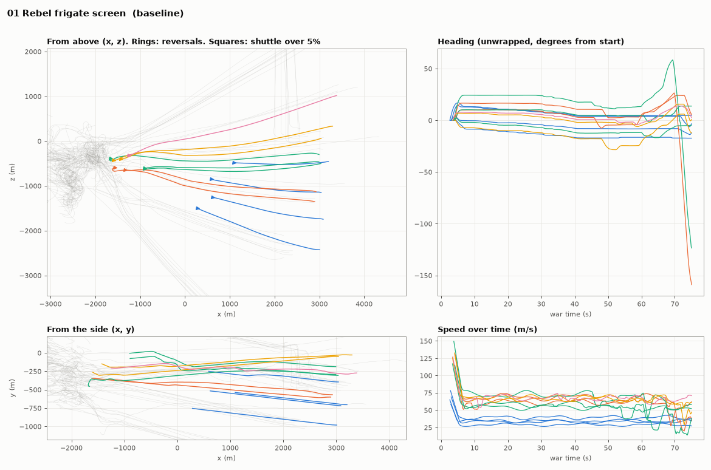
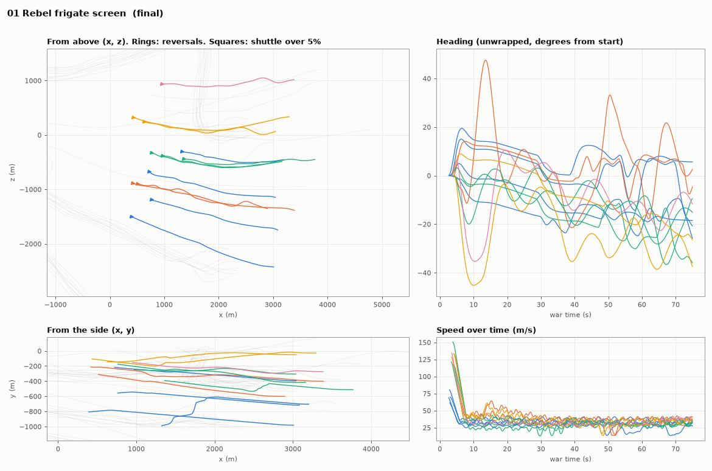
Yard v Empire, seed 3303, 60 a side, 60 s.
| headless, whole scene | before | after |
|---|---|---|
| reversals per ship-minute (all ships) | 0.141 | 0.000 |
| gunboat + capital reversals per ship-minute | 0.000 | 0.000 |
| worst shuttle share, any ship | 4.0% | 10.0% |
| p95 angular jerk, all ships (rad/s³) | 11.35 | 5.07 |
| p95 angular jerk, frigates | 11.61 | 0.44 |
| speed holds of 5 s+ | 19.9% | 2.8% |
| spins in place, hulls 80 m+ | 0 | 0 |
| squad-time in the cohesion band | 46.7% | 78.7% |
| smallest squadmate signature distance | 0.177 | 0.203 |
| clip (browser): focus ships reversals / worst shuttle | 0 / 0.0% | 0 / 0.0% |
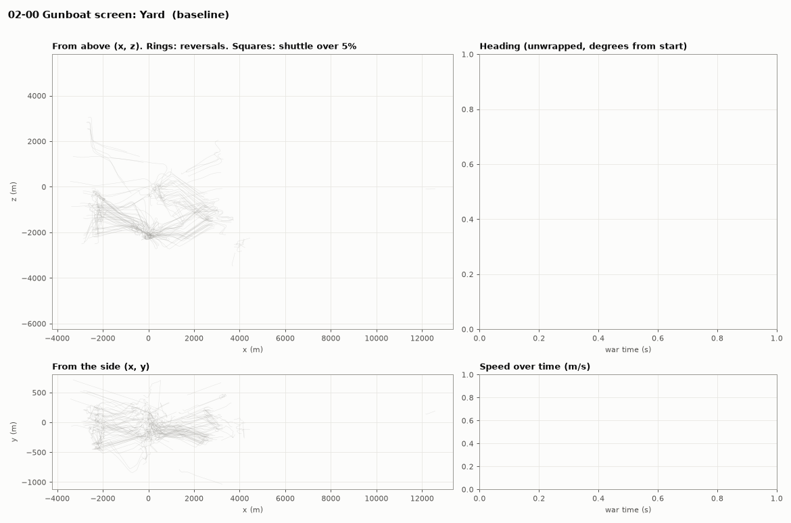
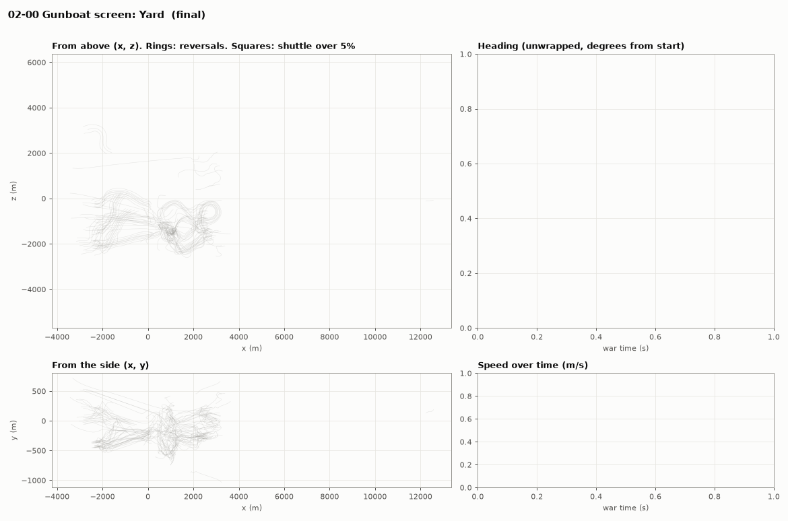
Shoal v Empire, seed 3303, 60 a side, 60 s.
| headless, whole scene | before | after |
|---|---|---|
| reversals per ship-minute (all ships) | 0.197 | 0.024 |
| gunboat + capital reversals per ship-minute | 0.000 | 0.000 |
| worst shuttle share, any ship | 16.0% | 10.0% |
| p95 angular jerk, all ships (rad/s³) | 11.61 | 10.84 |
| p95 angular jerk, frigates | 10.59 | 0.90 |
| speed holds of 5 s+ | 19.7% | 1.5% |
| spins in place, hulls 80 m+ | 0 | 0 |
| squad-time in the cohesion band | 49.5% | 70.6% |
| smallest squadmate signature distance | 0.247 | 0.237 |
| clip (browser): focus ships reversals / worst shuttle | 0 / 0.0% | 0 / 0.0% |
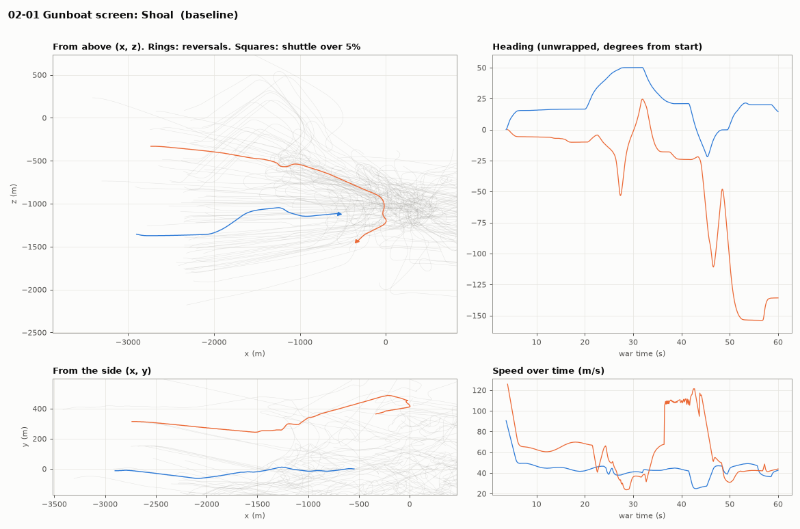
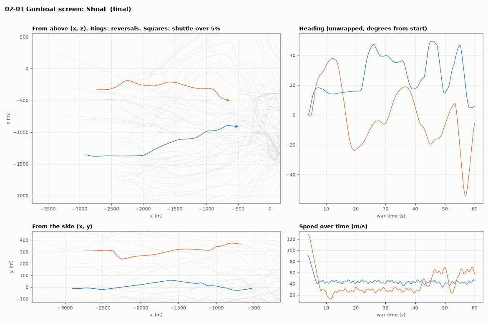
Lattice v Empire, seed 3303, 60 a side, 60 s.
| headless, whole scene | before | after |
|---|---|---|
| reversals per ship-minute (all ships) | 0.321 | 0.000 |
| gunboat + capital reversals per ship-minute | 0.000 | 0.000 |
| worst shuttle share, any ship | 24.0% | 4.0% |
| p95 angular jerk, all ships (rad/s³) | 7.16 | 2.72 |
| p95 angular jerk, frigates | 7.67 | 0.11 |
| speed holds of 5 s+ | 20.2% | 4.6% |
| spins in place, hulls 80 m+ | 5 | 0 |
| squad-time in the cohesion band | 66.2% | 91.0% |
| smallest squadmate signature distance | 0.193 | 0.230 |
| clip (browser): focus ships reversals / worst shuttle | 0 / 0.0% | 0 / 0.0% |
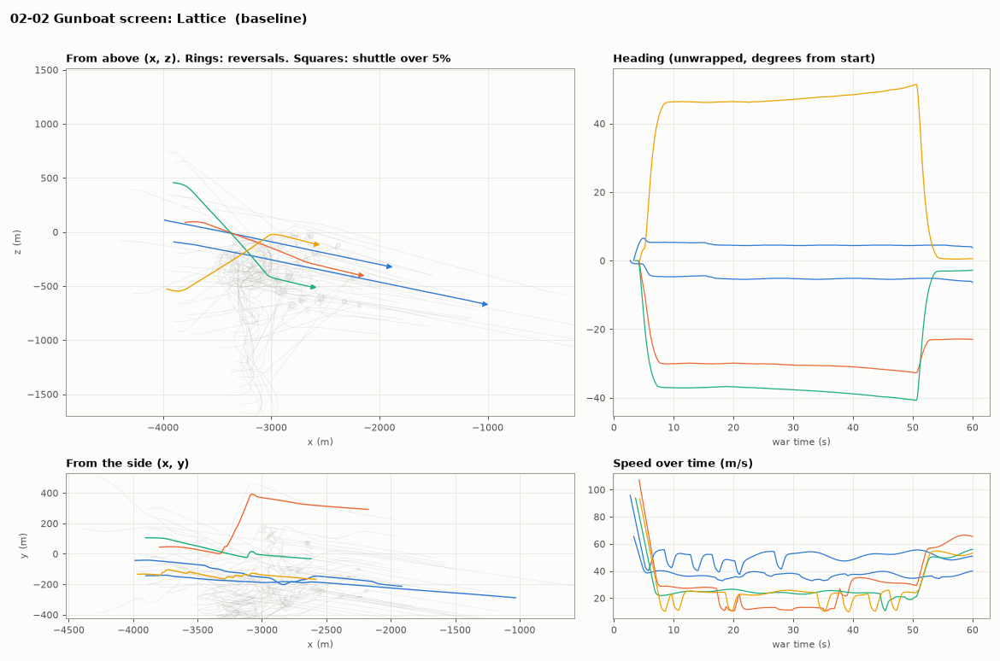
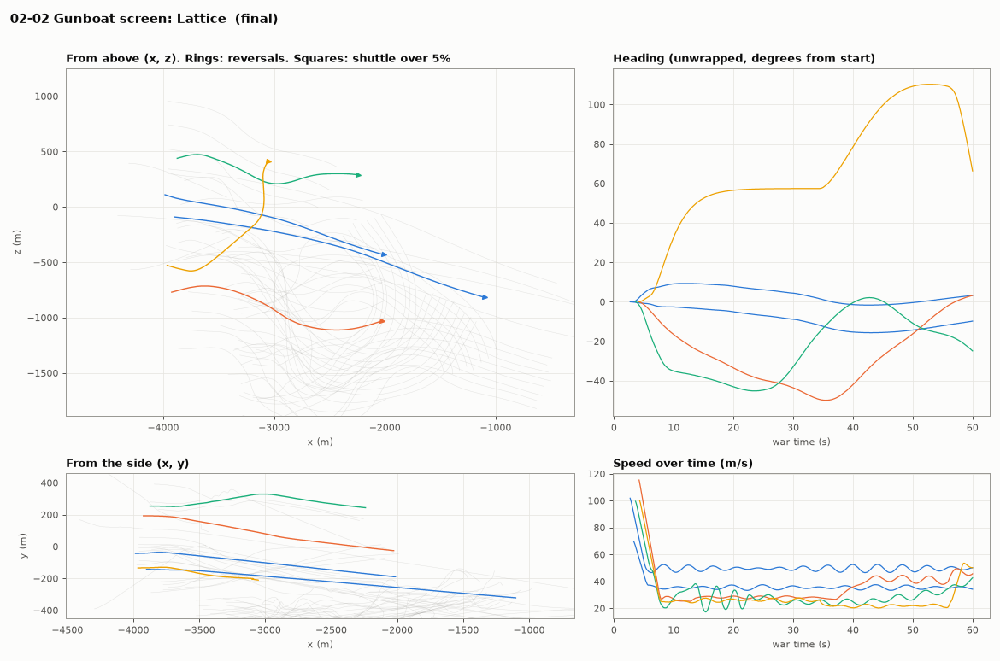
Drift v Empire, seed 3303, 60 a side, 60 s.
| headless, whole scene | before | after |
|---|---|---|
| reversals per ship-minute (all ships) | 0.140 | 0.000 |
| gunboat + capital reversals per ship-minute | 0.000 | 0.000 |
| worst shuttle share, any ship | 36.0% | 0.0% |
| p95 angular jerk, all ships (rad/s³) | 11.89 | 4.95 |
| p95 angular jerk, frigates | 9.23 | 0.44 |
| speed holds of 5 s+ | 18.8% | 1.7% |
| spins in place, hulls 80 m+ | 0 | 0 |
| squad-time in the cohesion band | 49.8% | 79.4% |
| smallest squadmate signature distance | 0.213 | 0.181 |
| clip (browser): focus ships reversals / worst shuttle | 0 / 0.0% | 0 / 0.0% |
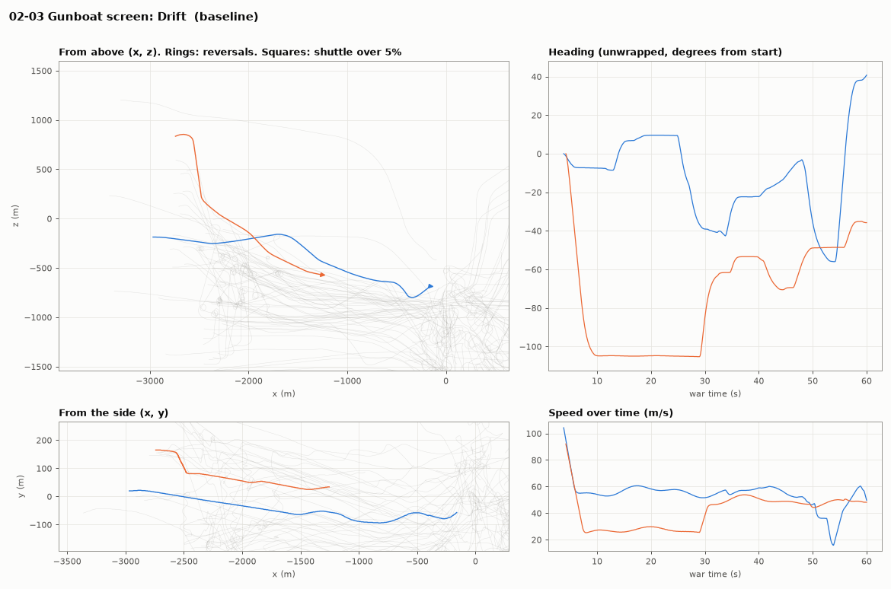
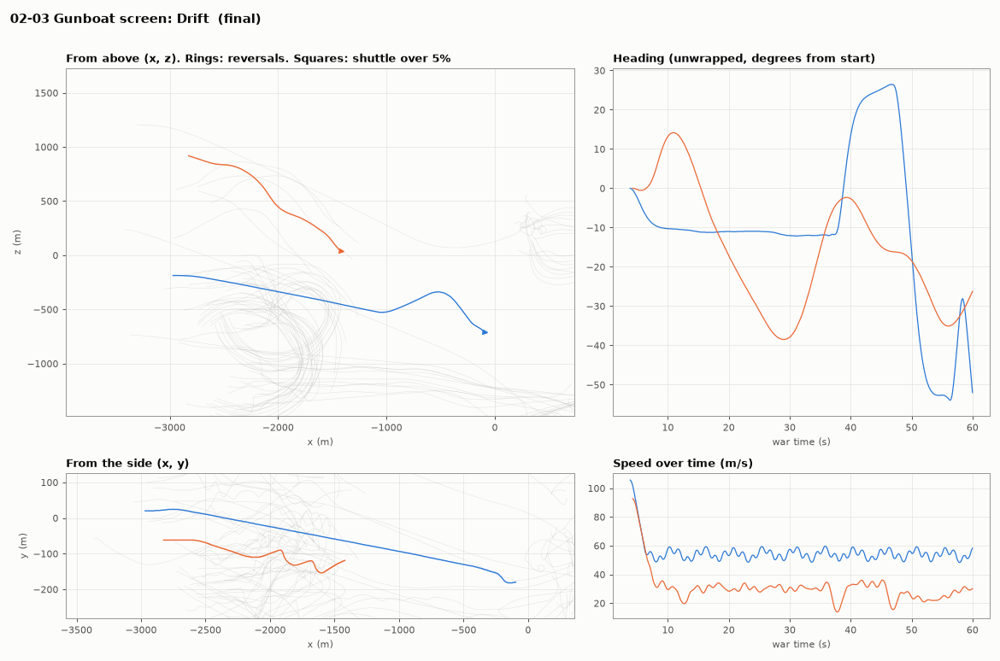
Choir v Empire, seed 3303, 60 a side, 60 s.
| headless, whole scene | before | after |
|---|---|---|
| reversals per ship-minute (all ships) | 0.161 | 0.000 |
| gunboat + capital reversals per ship-minute | 0.000 | 0.000 |
| worst shuttle share, any ship | 22.0% | 0.0% |
| p95 angular jerk, all ships (rad/s³) | 10.12 | 3.67 |
| p95 angular jerk, frigates | 8.22 | 0.21 |
| speed holds of 5 s+ | 22.4% | 3.0% |
| spins in place, hulls 80 m+ | 1 | 0 |
| squad-time in the cohesion band | 42.9% | 73.5% |
| smallest squadmate signature distance | 0.149 | 0.172 |
| clip (browser): focus ships reversals / worst shuttle | 0 / 0.0% | 0 / 0.0% |
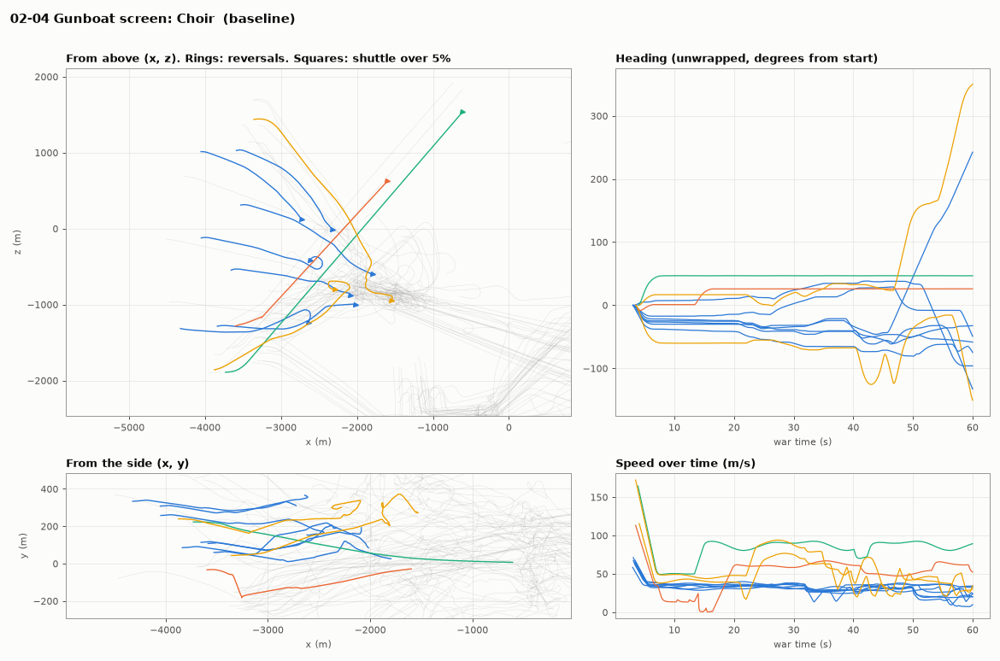
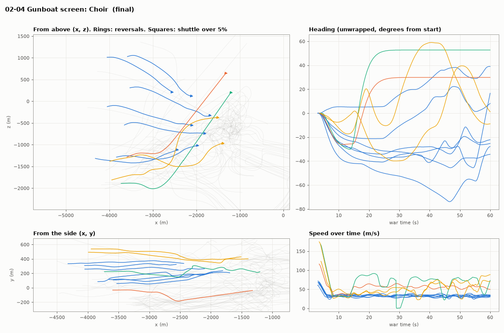
Empire v Rebels, seed 3303, 60 a side, 60 s.
| headless, whole scene | before | after |
|---|---|---|
| reversals per ship-minute (all ships) | 0.185 | 0.000 |
| gunboat + capital reversals per ship-minute | 0.000 | 0.000 |
| worst shuttle share, any ship | 0.0% | 0.0% |
| p95 angular jerk, all ships (rad/s³) | 7.16 | 2.99 |
| p95 angular jerk, frigates | 2.16 | 0.44 |
| speed holds of 5 s+ | 24.8% | 2.6% |
| spins in place, hulls 80 m+ | 0 | 0 |
| squad-time in the cohesion band | 59.4% | 86.5% |
| smallest squadmate signature distance | 0.086 | 0.129 |
| clip (browser): focus ships reversals / worst shuttle | 0 / 0.0% | 0 / 0.0% |
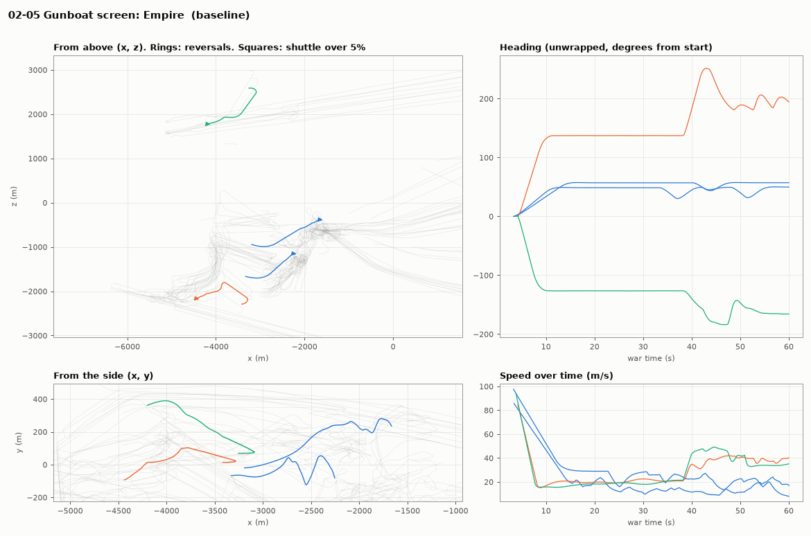
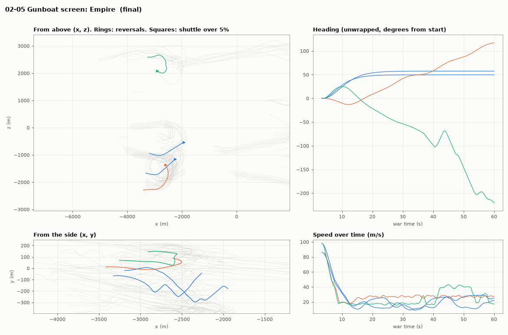
Rebels v Empire, seed 3303, 60 a side, 60 s.
| headless, whole scene | before | after |
|---|---|---|
| reversals per ship-minute (all ships) | 0.332 | 0.000 |
| gunboat + capital reversals per ship-minute | 0.064 | 0.000 |
| worst shuttle share, any ship | 32.0% | 0.0% |
| p95 angular jerk, all ships (rad/s³) | 10.12 | 5.19 |
| p95 angular jerk, frigates | 8.61 | 0.39 |
| speed holds of 5 s+ | 24.7% | 3.2% |
| spins in place, hulls 80 m+ | 0 | 0 |
| squad-time in the cohesion band | 49.9% | 74.1% |
| smallest squadmate signature distance | 0.195 | 0.184 |
| clip (browser): focus ships reversals / worst shuttle | 2 / 10.0% | 0 / 0.0% |
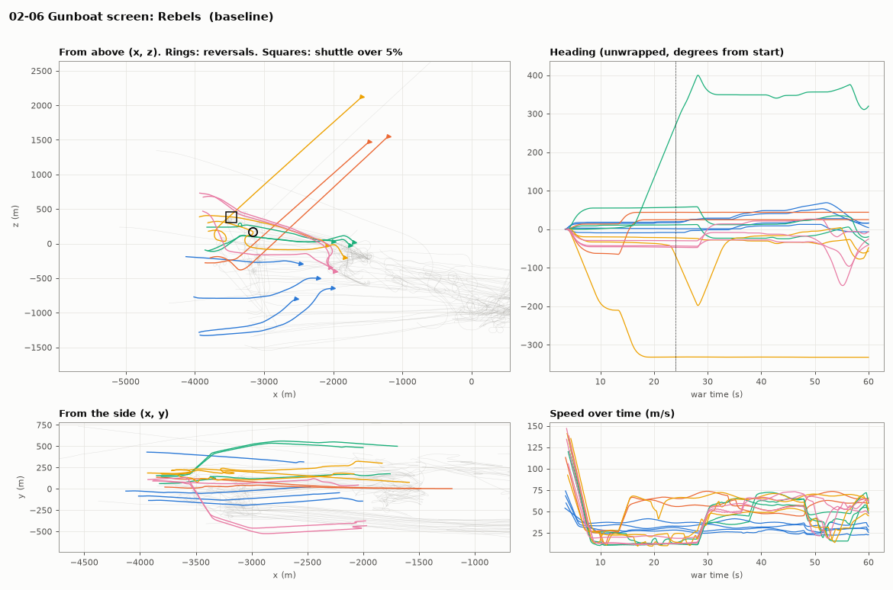
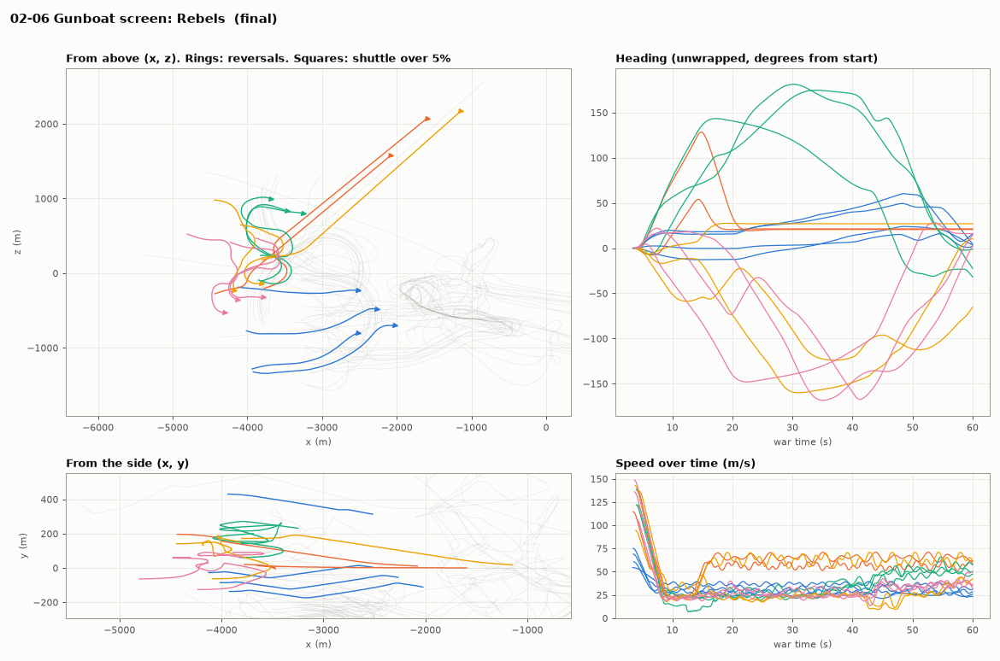
Minbari v Empire, seed 3303, 60 a side, 60 s.
| headless, whole scene | before | after |
|---|---|---|
| reversals per ship-minute (all ships) | 0.149 | 0.000 |
| gunboat + capital reversals per ship-minute | 0.000 | 0.000 |
| worst shuttle share, any ship | 10.0% | 0.0% |
| p95 angular jerk, all ships (rad/s³) | 8.22 | 2.60 |
| p95 angular jerk, frigates | 5.43 | 0.07 |
| speed holds of 5 s+ | 24.9% | 7.3% |
| spins in place, hulls 80 m+ | 0 | 0 |
| squad-time in the cohesion band | 38.8% | 68.0% |
| smallest squadmate signature distance | 0.168 | 0.157 |
| clip (browser): focus ships reversals / worst shuttle | 0 / 0.0% | 0 / 0.0% |
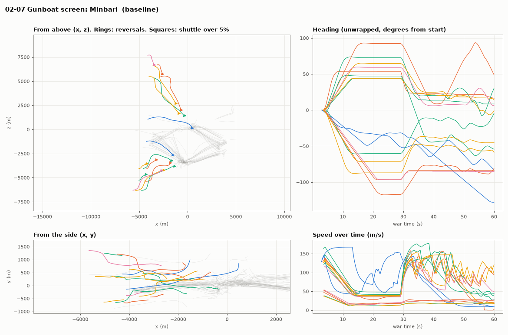
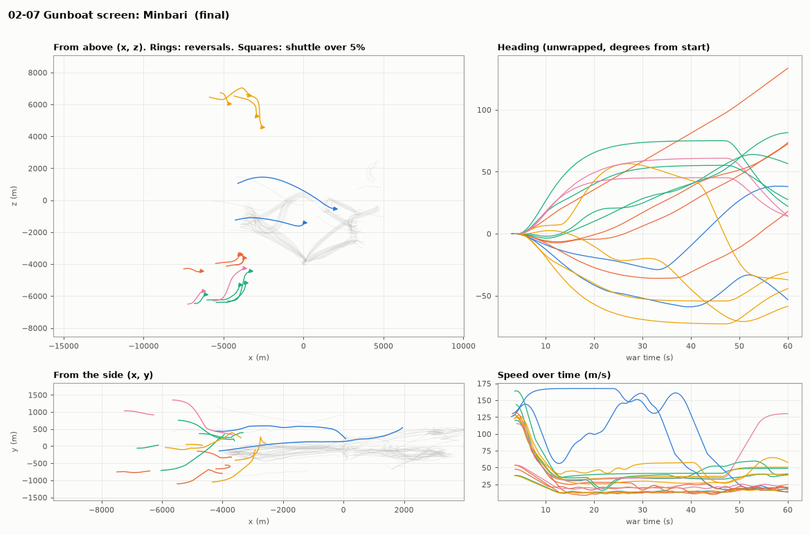
EarthForce v Empire, seed 3303, 60 a side, 60 s.
| headless, whole scene | before | after |
|---|---|---|
| reversals per ship-minute (all ships) | 0.127 | 0.000 |
| gunboat + capital reversals per ship-minute | 0.000 | 0.000 |
| worst shuttle share, any ship | 24.0% | 0.0% |
| p95 angular jerk, all ships (rad/s³) | 7.33 | 3.51 |
| p95 angular jerk, frigates | 4.03 | 0.14 |
| speed holds of 5 s+ | 23.6% | 3.6% |
| spins in place, hulls 80 m+ | 0 | 0 |
| squad-time in the cohesion band | 65.9% | 81.8% |
| smallest squadmate signature distance | 0.232 | 0.194 |
| clip (browser): focus ships reversals / worst shuttle | 0 / 0.0% | 0 / 0.0% |
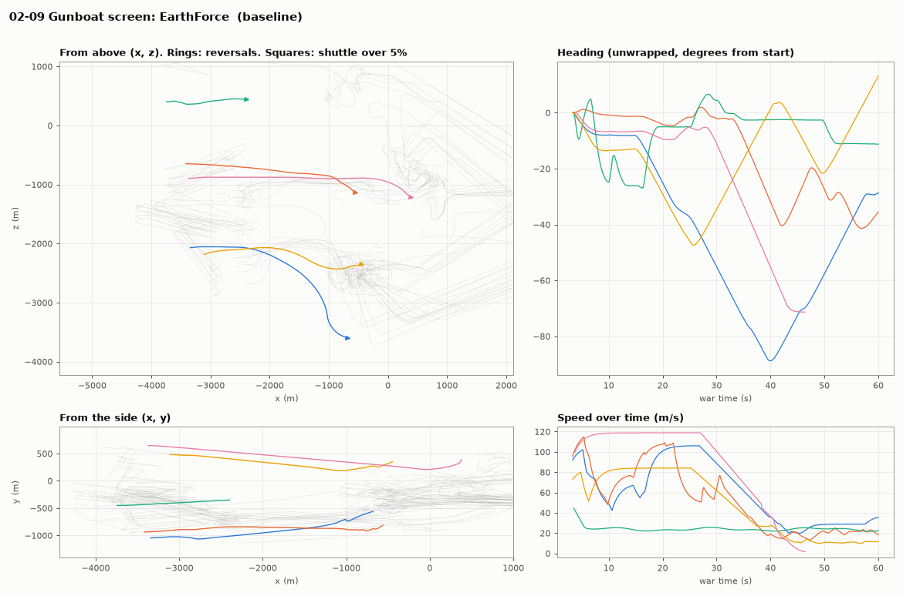
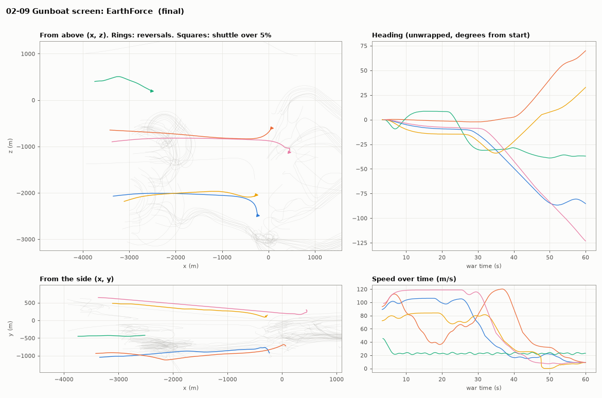
Federation v Empire, seed 3303, 60 a side, 60 s.
| headless, whole scene | before | after |
|---|---|---|
| reversals per ship-minute (all ships) | 0.047 | 0.000 |
| gunboat + capital reversals per ship-minute | 0.076 | 0.000 |
| worst shuttle share, any ship | 2.0% | 6.0% |
| p95 angular jerk, all ships (rad/s³) | 6.84 | 3.67 |
| p95 angular jerk, frigates | 9.23 | 0.07 |
| speed holds of 5 s+ | 30.6% | 8.8% |
| spins in place, hulls 80 m+ | 0 | 0 |
| squad-time in the cohesion band | 54.0% | 78.5% |
| smallest squadmate signature distance | 0.225 | 0.168 |
| clip (browser): focus ships reversals / worst shuttle | 0 / 0.0% | 0 / 0.0% |
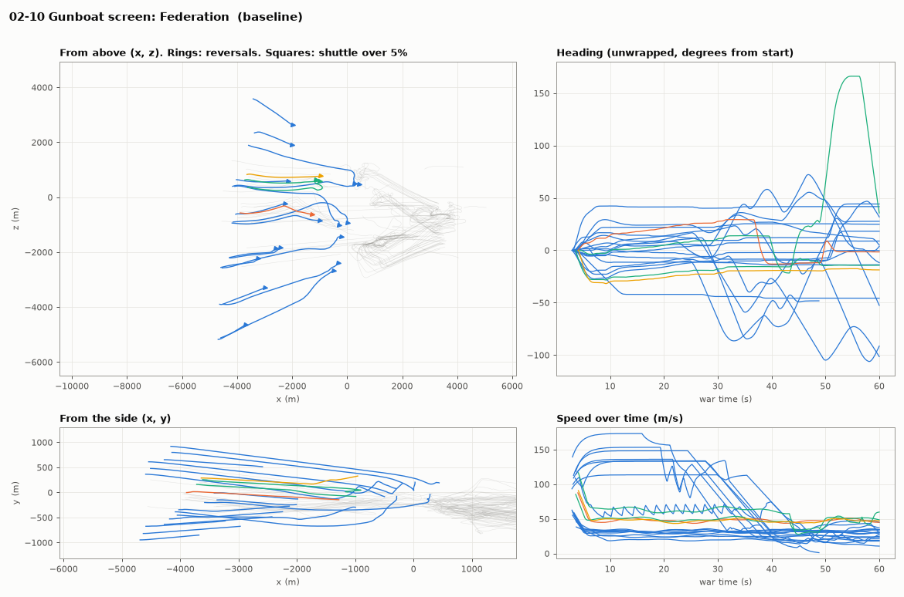
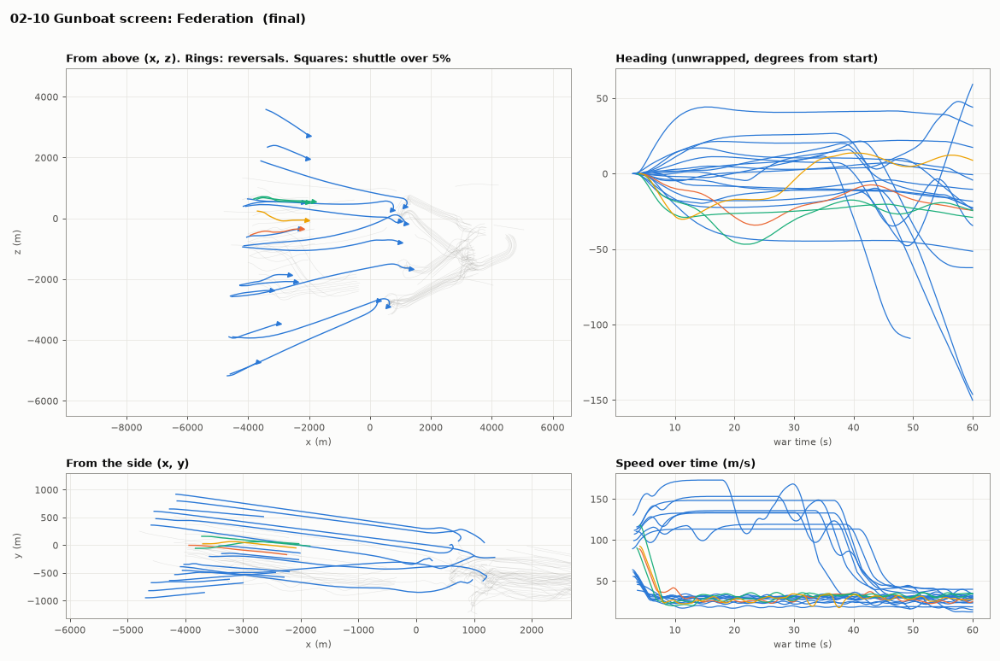
Klingons v Empire, seed 3303, 60 a side, 60 s.
| headless, whole scene | before | after |
|---|---|---|
| reversals per ship-minute (all ships) | 0.232 | 0.000 |
| gunboat + capital reversals per ship-minute | 0.000 | 0.000 |
| worst shuttle share, any ship | 82.0% | 0.0% |
| p95 angular jerk, all ships (rad/s³) | 8.22 | 3.35 |
| p95 angular jerk, frigates | 6.10 | 0.29 |
| speed holds of 5 s+ | 23.5% | 2.7% |
| spins in place, hulls 80 m+ | 0 | 0 |
| squad-time in the cohesion band | 58.0% | 87.6% |
| smallest squadmate signature distance | 0.098 | 0.207 |
| clip (browser): focus ships reversals / worst shuttle | 0 / 0.0% | 0 / 0.0% |
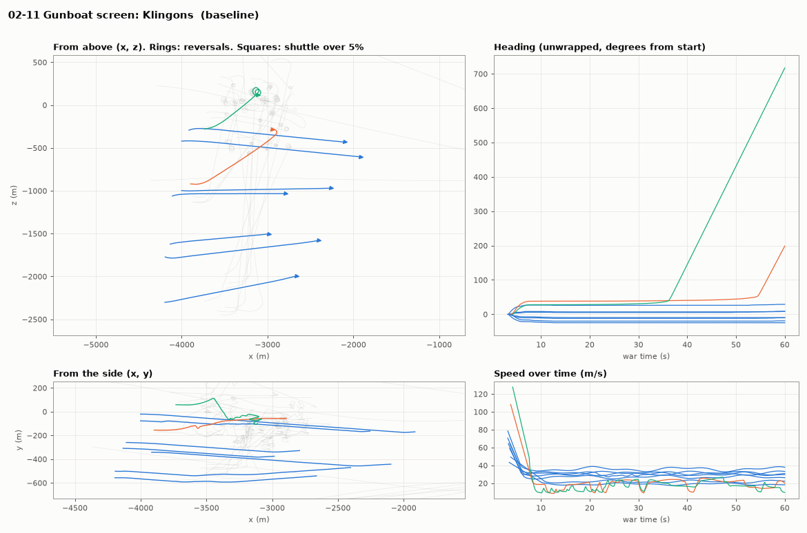
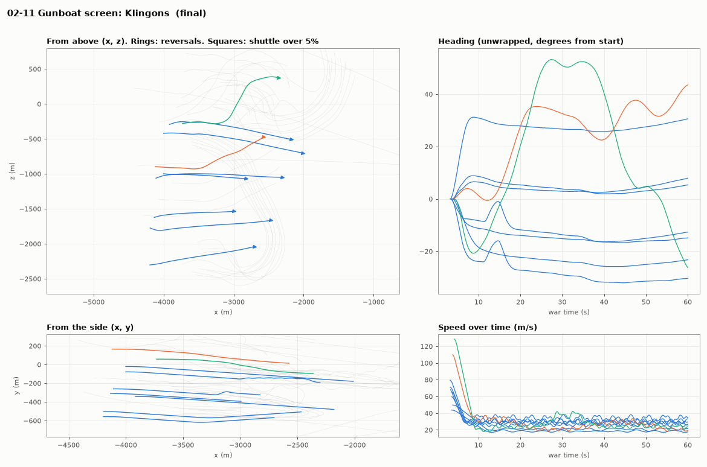
Borg v Empire, seed 3303, 60 a side, 60 s.
| headless, whole scene | before | after |
|---|---|---|
| reversals per ship-minute (all ships) | 0.259 | 0.012 |
| gunboat + capital reversals per ship-minute | 0.000 | 0.000 |
| worst shuttle share, any ship | 54.0% | 6.0% |
| p95 angular jerk, all ships (rad/s³) | 13.34 | 4.73 |
| p95 angular jerk, frigates | 12.45 | 1.16 |
| speed holds of 5 s+ | 15.6% | 3.3% |
| spins in place, hulls 80 m+ | 2 | 0 |
| squad-time in the cohesion band | 21.0% | 52.6% |
| smallest squadmate signature distance | 0.294 | 0.250 |
| clip (browser): focus ships reversals / worst shuttle | 0 / 0.0% | 0 / 0.0% |
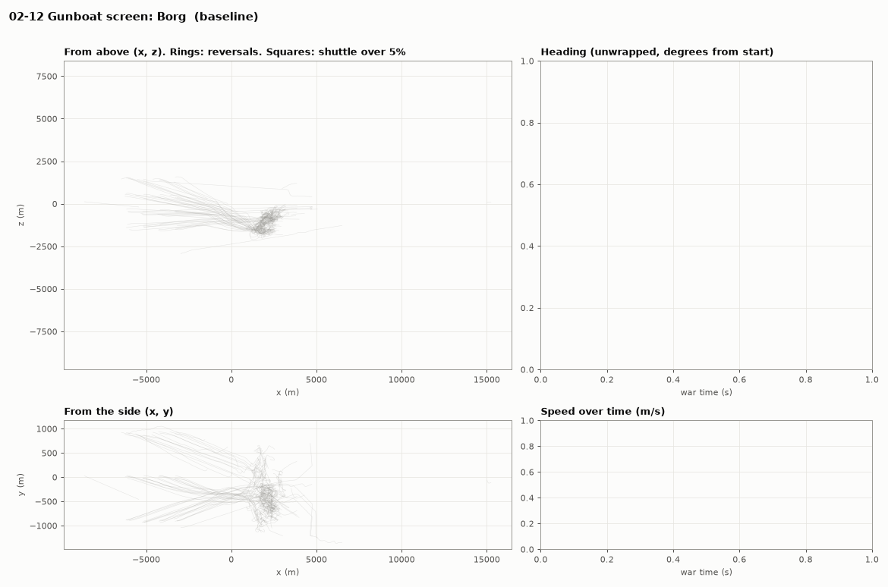
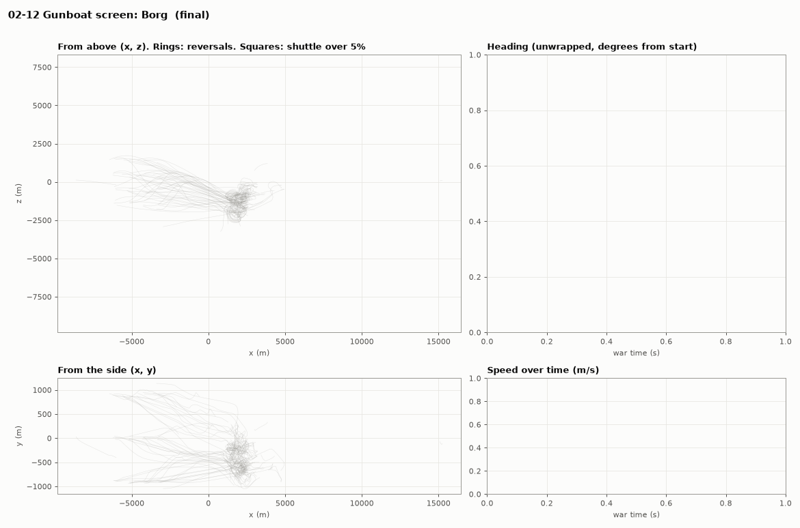
Mondoshawan v Empire, seed 3303, 60 a side, 60 s.
| headless, whole scene | before | after |
|---|---|---|
| reversals per ship-minute (all ships) | 0.265 | 0.000 |
| gunboat + capital reversals per ship-minute | 0.000 | 0.000 |
| worst shuttle share, any ship | 70.0% | 0.0% |
| p95 angular jerk, all ships (rad/s³) | 6.84 | 2.02 |
| p95 angular jerk, frigates | 5.31 | 0.20 |
| speed holds of 5 s+ | 30.1% | 5.1% |
| spins in place, hulls 80 m+ | 0 | 0 |
| squad-time in the cohesion band | 48.9% | 69.2% |
| smallest squadmate signature distance | 0.133 | 0.166 |
| clip (browser): focus ships reversals / worst shuttle | 0 / 0.0% | 0 / 0.0% |
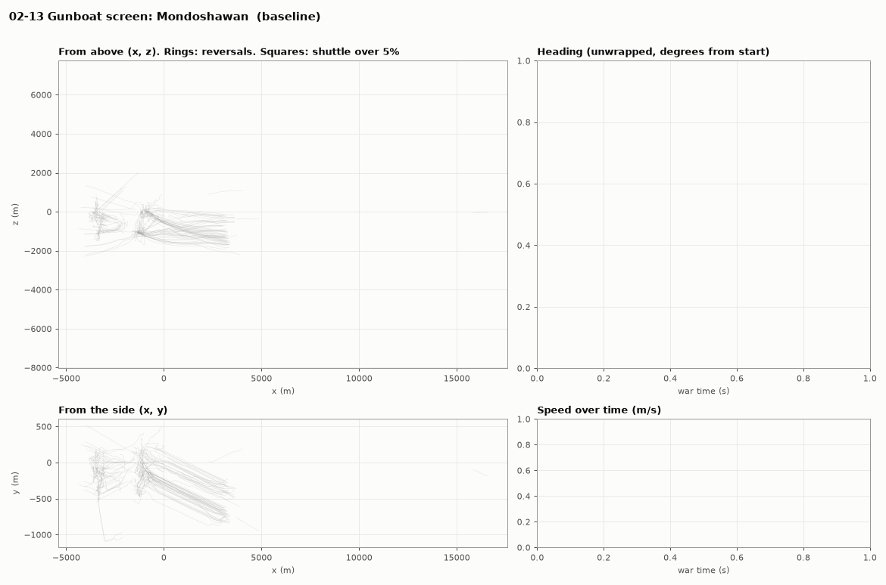
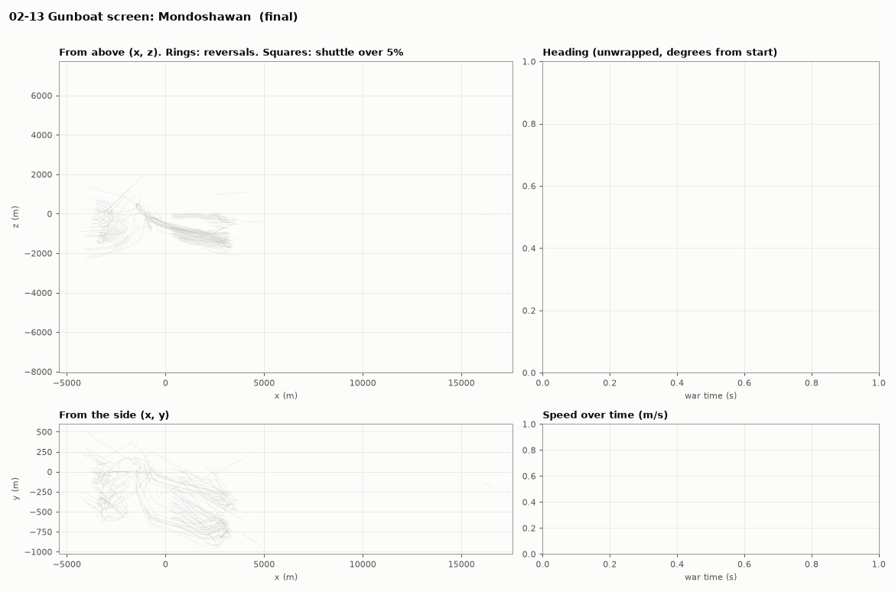
USCM v Empire, seed 3303, 60 a side, 60 s.
| headless, whole scene | before | after |
|---|---|---|
| reversals per ship-minute (all ships) | 0.070 | 0.000 |
| gunboat + capital reversals per ship-minute | 0.000 | 0.000 |
| worst shuttle share, any ship | 10.0% | 2.0% |
| p95 angular jerk, all ships (rad/s³) | 8.81 | 4.32 |
| p95 angular jerk, frigates | 7.85 | 0.56 |
| speed holds of 5 s+ | 33.3% | 2.6% |
| spins in place, hulls 80 m+ | 0 | 0 |
| squad-time in the cohesion band | 53.0% | 77.2% |
| smallest squadmate signature distance | 0.213 | 0.236 |
| clip (browser): focus ships reversals / worst shuttle | 2 / 0.0% | 0 / 0.0% |
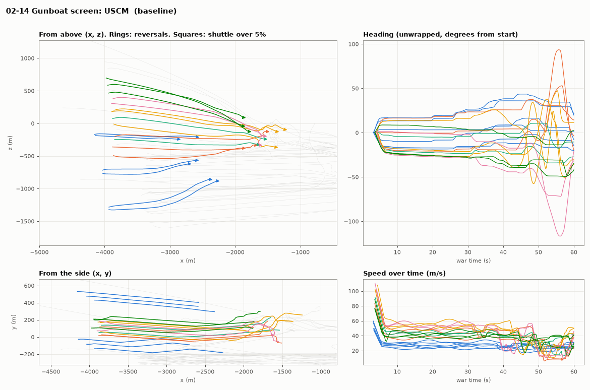
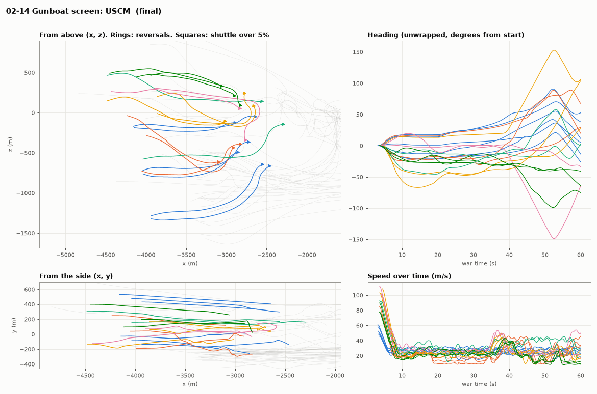
Engineers v Empire, seed 3303, 60 a side, 60 s.
| headless, whole scene | before | after |
|---|---|---|
| reversals per ship-minute (all ships) | 0.067 | 0.000 |
| gunboat + capital reversals per ship-minute | 0.000 | 0.000 |
| worst shuttle share, any ship | 58.0% | 0.0% |
| p95 angular jerk, all ships (rad/s³) | 6.24 | 1.93 |
| p95 angular jerk, frigates | 6.38 | 0.08 |
| speed holds of 5 s+ | 32.5% | 3.3% |
| spins in place, hulls 80 m+ | 0 | 0 |
| squad-time in the cohesion band | 30.2% | 87.1% |
| smallest squadmate signature distance | 0.142 | 0.145 |
| clip (browser): focus ships reversals / worst shuttle | 0 / 0.0% | 0 / 0.0% |
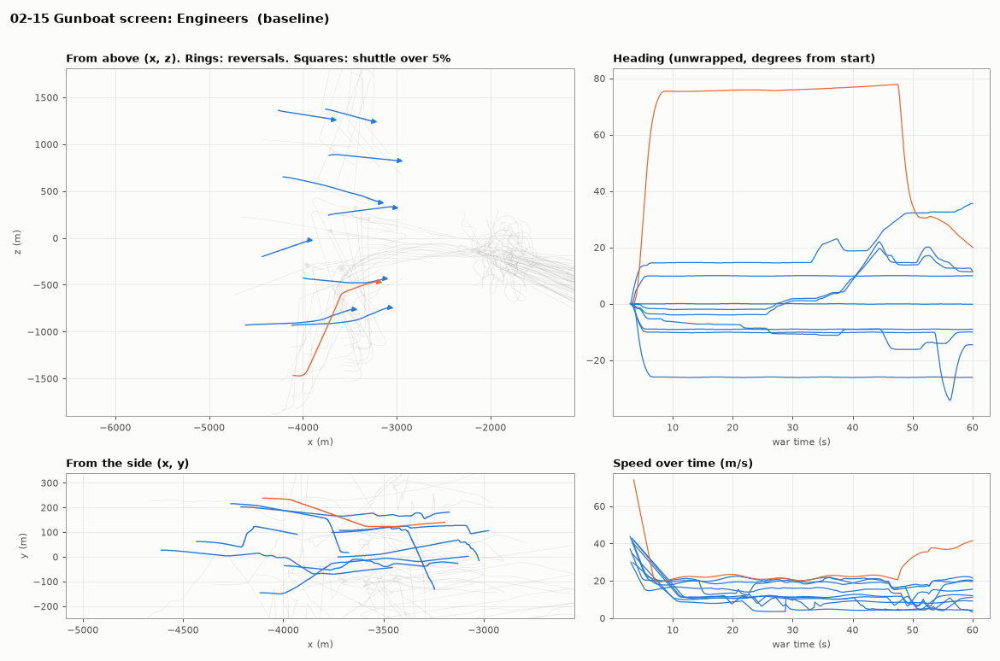
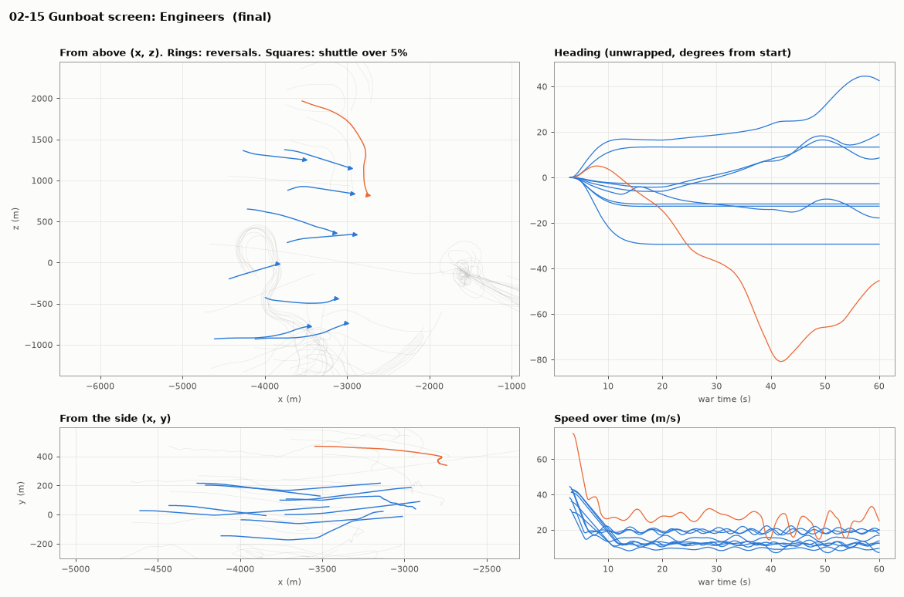
Yautja v Empire, seed 3303, 60 a side, 60 s.
| headless, whole scene | before | after |
|---|---|---|
| reversals per ship-minute (all ships) | 0.333 | 0.009 |
| gunboat + capital reversals per ship-minute | 0.000 | 0.000 |
| worst shuttle share, any ship | 76.0% | 0.0% |
| p95 angular jerk, all ships (rad/s³) | 10.59 | 2.16 |
| p95 angular jerk, frigates | 10.12 | 0.34 |
| speed holds of 5 s+ | 17.8% | 2.9% |
| spins in place, hulls 80 m+ | 1 | 0 |
| squad-time in the cohesion band | 49.2% | 88.1% |
| smallest squadmate signature distance | 0.147 | 0.236 |
| clip (browser): focus ships reversals / worst shuttle | 2 / 6.0% | 0 / 0.0% |
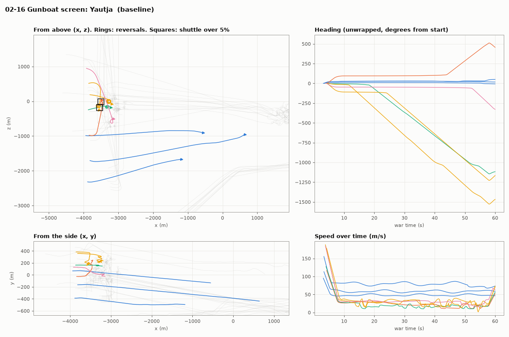
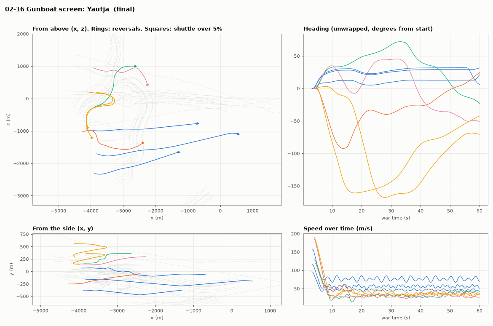
First Ones v Empire, seed 3303, 60 a side, 60 s.
| headless, whole scene | before | after |
|---|---|---|
| reversals per ship-minute (all ships) | 0.177 | 0.000 |
| gunboat + capital reversals per ship-minute | 0.000 | 0.000 |
| worst shuttle share, any ship | 0.0% | 0.0% |
| p95 angular jerk, all ships (rad/s³) | 8.41 | 2.99 |
| p95 angular jerk, frigates | 9.23 | 0.31 |
| speed holds of 5 s+ | 24.0% | 12.9% |
| spins in place, hulls 80 m+ | 0 | 0 |
| squad-time in the cohesion band | 68.5% | 70.9% |
| smallest squadmate signature distance | 0.169 | 0.265 |
| clip (browser): focus ships reversals / worst shuttle | 0 / 0.0% | 0 / 0.0% |
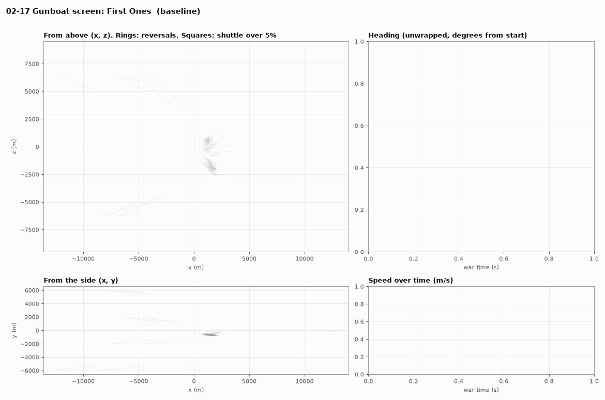
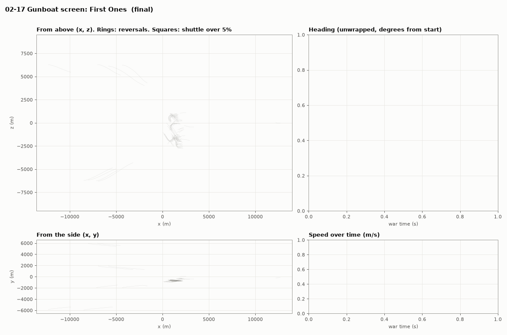
Romulans v Empire, seed 3303, 60 a side, 60 s.
| headless, whole scene | before | after |
|---|---|---|
| reversals per ship-minute (all ships) | 0.021 | 0.000 |
| gunboat + capital reversals per ship-minute | 0.000 | 0.000 |
| worst shuttle share, any ship | 0.0% | 0.0% |
| p95 angular jerk, all ships (rad/s³) | 4.52 | 2.79 |
| p95 angular jerk, frigates | 1.76 | 0.15 |
| speed holds of 5 s+ | 31.4% | 4.4% |
| spins in place, hulls 80 m+ | 0 | 0 |
| squad-time in the cohesion band | 64.2% | 74.1% |
| smallest squadmate signature distance | 0.032 | 0.230 |
| clip (browser): focus ships reversals / worst shuttle | 0 / 0.0% | 0 / 0.0% |
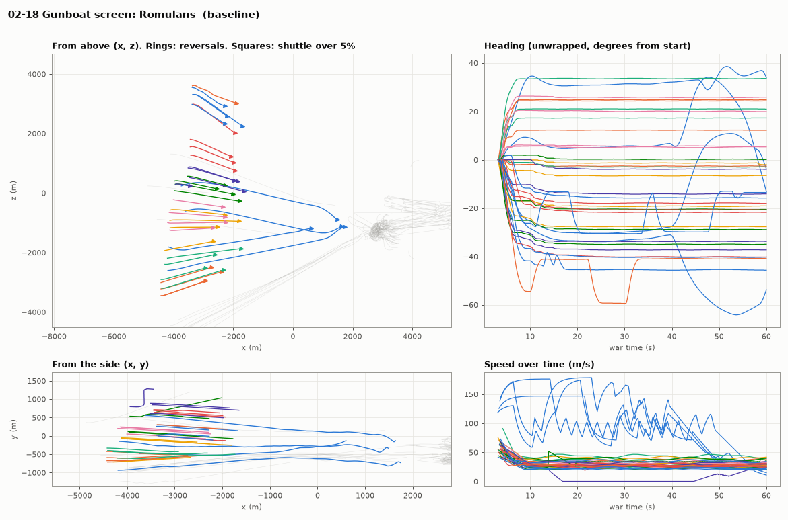
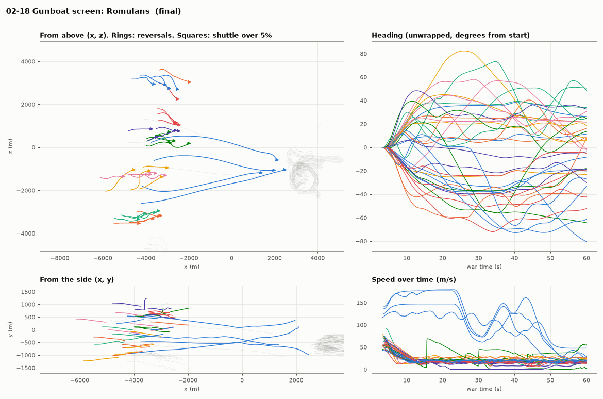
Dominion v Empire, seed 3303, 60 a side, 60 s.
| headless, whole scene | before | after |
|---|---|---|
| reversals per ship-minute (all ships) | 0.044 | 0.000 |
| gunboat + capital reversals per ship-minute | 0.000 | 0.000 |
| worst shuttle share, any ship | 18.0% | 0.0% |
| p95 angular jerk, all ships (rad/s³) | 7.00 | 3.20 |
| p95 angular jerk, frigates | 12.74 | 0.54 |
| speed holds of 5 s+ | 25.0% | 3.5% |
| spins in place, hulls 80 m+ | 0 | 0 |
| squad-time in the cohesion band | 61.2% | 77.9% |
| smallest squadmate signature distance | 0.080 | 0.207 |
| clip (browser): focus ships reversals / worst shuttle | 0 / 0.0% | 0 / 0.0% |
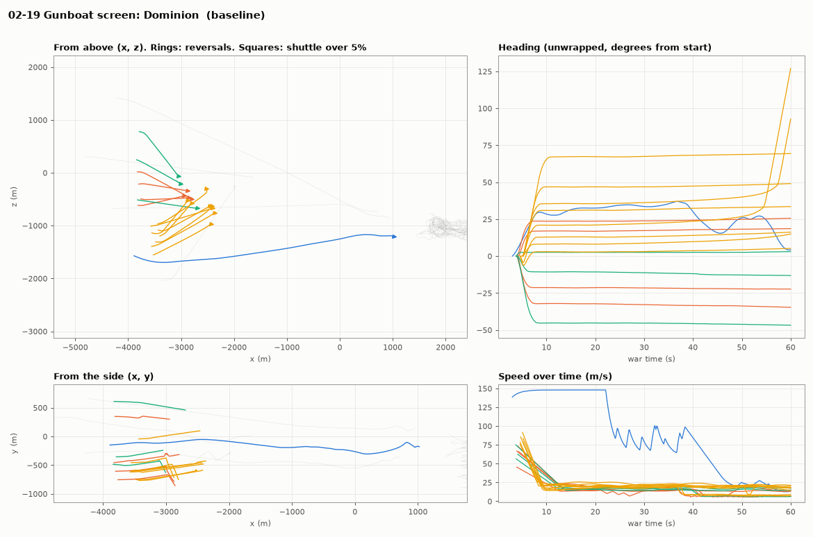
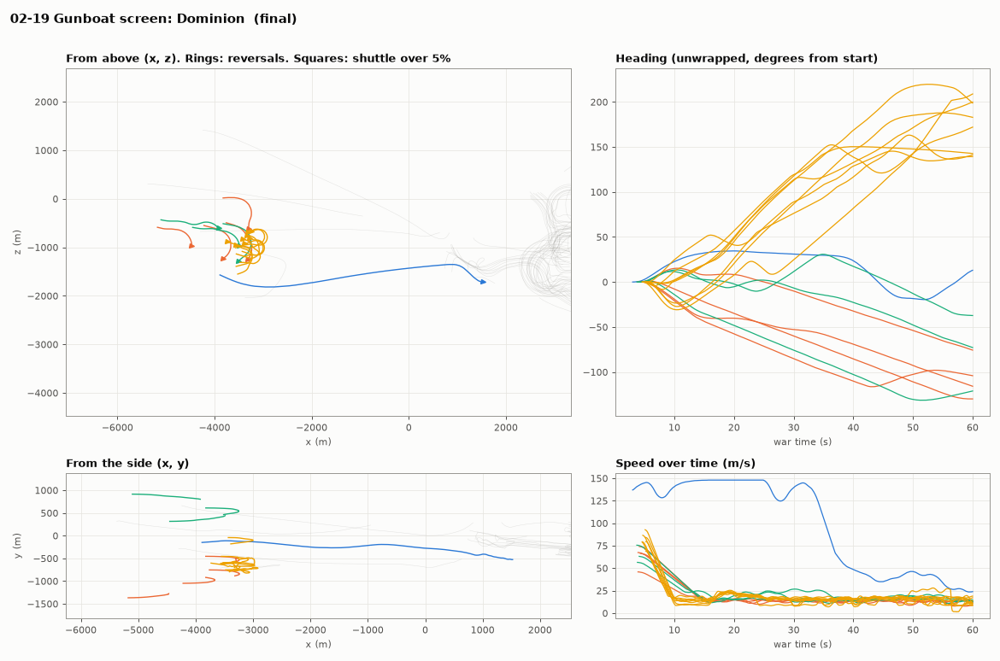
Space Marines v Empire, seed 3303, 60 a side, 60 s.
| headless, whole scene | before | after |
|---|---|---|
| reversals per ship-minute (all ships) | 0.020 | 0.000 |
| gunboat + capital reversals per ship-minute | 0.000 | 0.000 |
| worst shuttle share, any ship | 0.0% | 0.0% |
| p95 angular jerk, all ships (rad/s³) | 10.12 | 1.43 |
| p95 angular jerk, frigates | 19.28 | 0.10 |
| speed holds of 5 s+ | 44.3% | 13.0% |
| spins in place, hulls 80 m+ | 0 | 0 |
| squad-time in the cohesion band | 34.2% | 76.6% |
| smallest squadmate signature distance | 0.074 | 0.270 |
| clip (browser): focus ships reversals / worst shuttle | 0 / 0.0% | 0 / 0.0% |
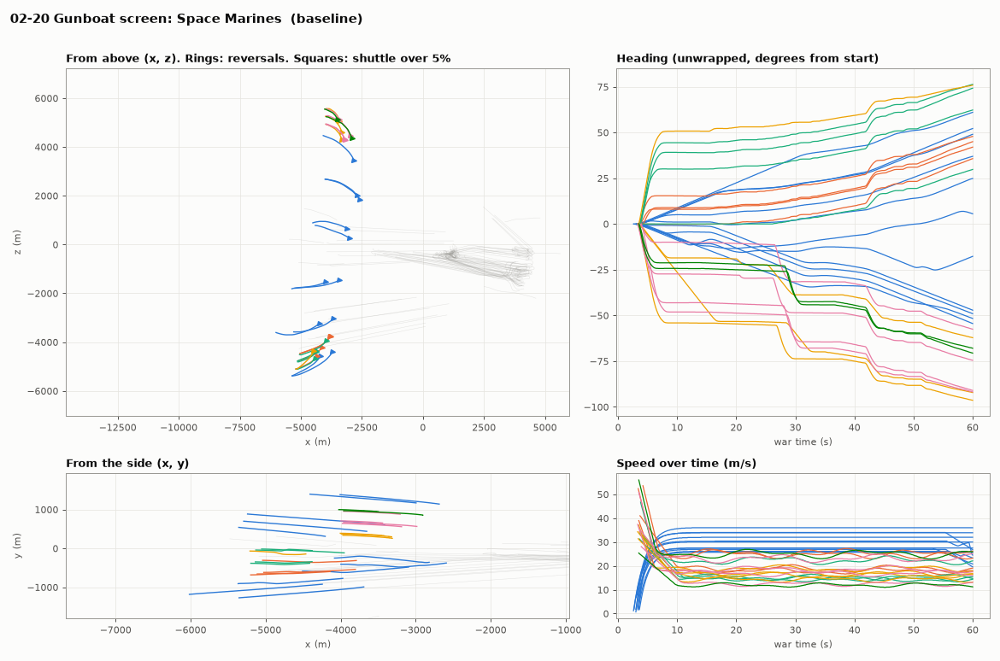
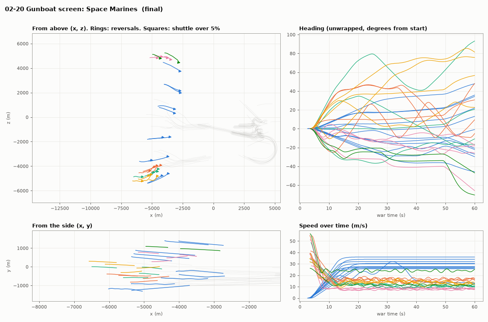
Tyranids v Empire, seed 3303, 60 a side, 60 s.
| headless, whole scene | before | after |
|---|---|---|
| reversals per ship-minute (all ships) | 0.137 | 0.000 |
| gunboat + capital reversals per ship-minute | 0.000 | 0.000 |
| worst shuttle share, any ship | 10.0% | 0.0% |
| p95 angular jerk, all ships (rad/s³) | 7.67 | 3.20 |
| p95 angular jerk, frigates | 6.53 | 1.19 |
| speed holds of 5 s+ | 23.5% | 4.9% |
| spins in place, hulls 80 m+ | 0 | 0 |
| squad-time in the cohesion band | 40.3% | 67.5% |
| smallest squadmate signature distance | 0.176 | 0.181 |
| clip (browser): focus ships reversals / worst shuttle | 0 / 0.0% | 0 / 0.0% |
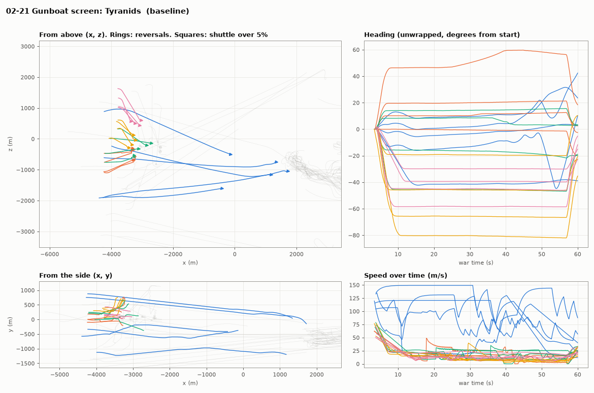
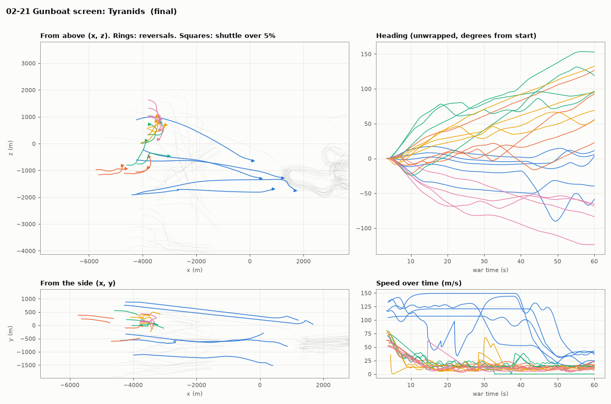
Tesla v Empire, seed 3303, 60 a side, 60 s.
| headless, whole scene | before | after |
|---|---|---|
| reversals per ship-minute (all ships) | 0.529 | 0.000 |
| gunboat + capital reversals per ship-minute | 0.000 | 0.000 |
| worst shuttle share, any ship | 76.0% | 0.0% |
| p95 angular jerk, all ships (rad/s³) | 11.09 | 3.76 |
| p95 angular jerk, frigates | 5.96 | 0.33 |
| speed holds of 5 s+ | 14.6% | 3.9% |
| spins in place, hulls 80 m+ | 0 | 0 |
| squad-time in the cohesion band | 45.5% | 94.6% |
| smallest squadmate signature distance | 0.174 | 0.197 |
| clip (browser): focus ships reversals / worst shuttle | 0 / 0.0% | 0 / 0.0% |
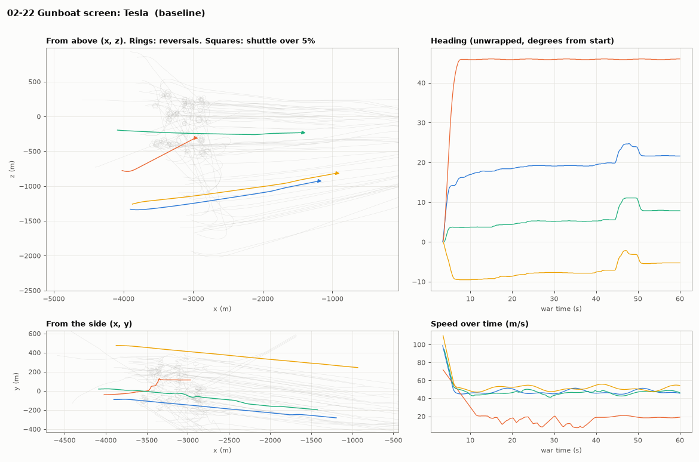
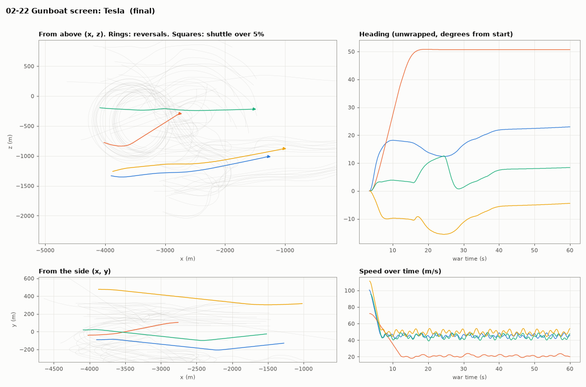
Empire v Rebels, seed 1101, 60 a side, 80 s.
| headless, whole scene | before | after |
|---|---|---|
| reversals per ship-minute (all ships) | 0.406 | 0.017 |
| gunboat + capital reversals per ship-minute | 0.072 | 0.000 |
| worst shuttle share, any ship | 12.0% | 0.0% |
| p95 angular jerk, all ships (rad/s³) | 11.35 | 5.19 |
| p95 angular jerk, frigates | 9.44 | 0.45 |
| speed holds of 5 s+ | 19.1% | 2.2% |
| spins in place, hulls 80 m+ | 0 | 0 |
| squad-time in the cohesion band | 51.3% | 74.3% |
| smallest squadmate signature distance | 0.173 | 0.155 |
| clip (browser): focus ships reversals / worst shuttle | 3 / 6.0% | 0 / 0.0% |
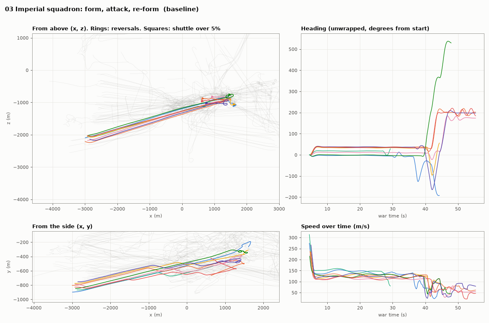
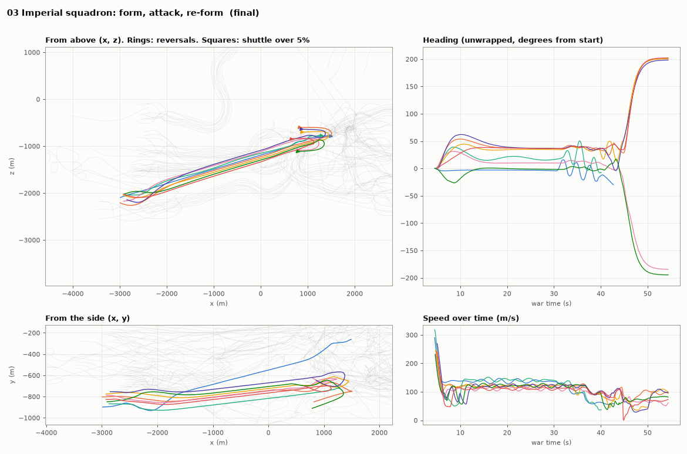
Empire v Rebels, seed 1101, 60 a side, 80 s.
| headless, whole scene | before | after |
|---|---|---|
| reversals per ship-minute (all ships) | 0.406 | 0.017 |
| gunboat + capital reversals per ship-minute | 0.072 | 0.000 |
| worst shuttle share, any ship | 12.0% | 0.0% |
| p95 angular jerk, all ships (rad/s³) | 11.35 | 5.19 |
| p95 angular jerk, frigates | 9.44 | 0.45 |
| speed holds of 5 s+ | 19.1% | 2.2% |
| spins in place, hulls 80 m+ | 0 | 0 |
| squad-time in the cohesion band | 51.3% | 74.3% |
| smallest squadmate signature distance | 0.173 | 0.155 |
| clip (browser): focus ships reversals / worst shuttle | 0 / 12.0% | 0 / 0.0% |
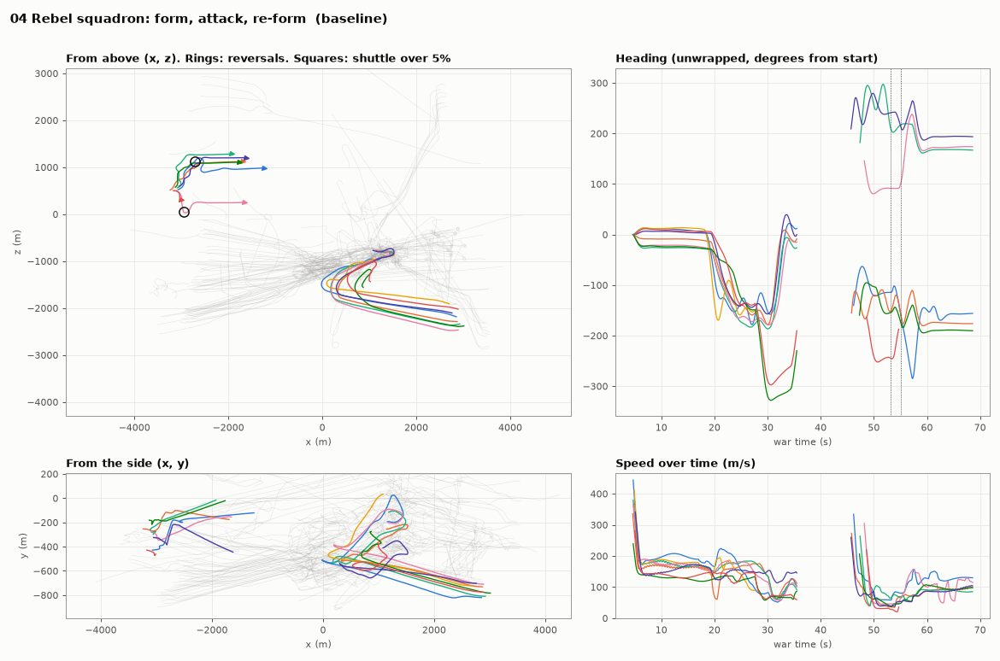
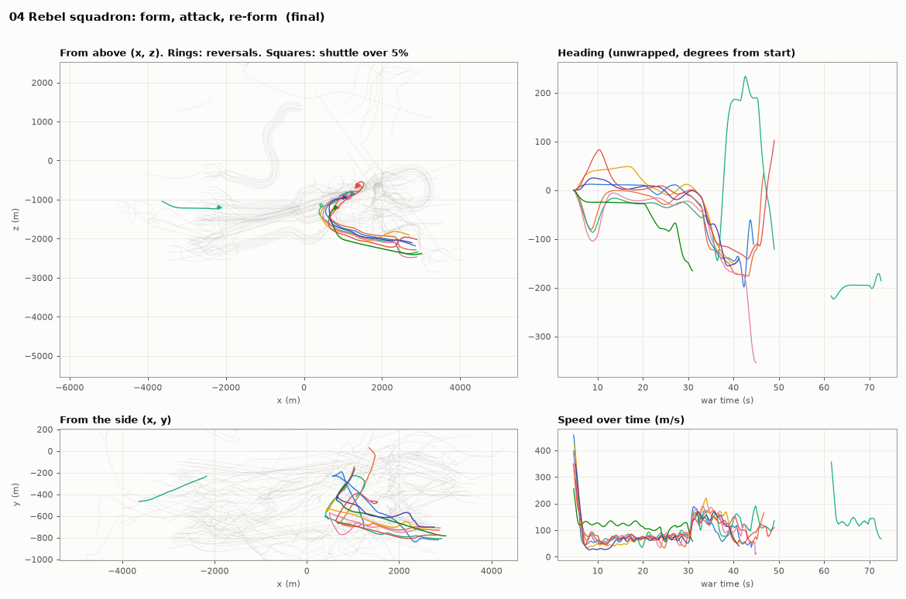
Borg v Federation, seed 1101, 60 a side, 70 s.
| headless, whole scene | before | after |
|---|---|---|
| reversals per ship-minute (all ships) | 0.391 | 0.000 |
| gunboat + capital reversals per ship-minute | 0.041 | 0.000 |
| worst shuttle share, any ship | 12.0% | 0.0% |
| p95 angular jerk, all ships (rad/s³) | 11.89 | 0.62 |
| p95 angular jerk, frigates | 14.96 | 0.16 |
| speed holds of 5 s+ | 23.4% | 6.7% |
| spins in place, hulls 80 m+ | 2 | 0 |
| squad-time in the cohesion band | 35.2% | 63.1% |
| smallest squadmate signature distance | 0.189 | 0.251 |
| clip (browser): focus ships reversals / worst shuttle | 9 / 0.0% | 0 / 0.0% |
EarthForce v Federation, seed 4242, 30 a side, 120 s. Scripted: the orders in this scene are issued at fixed times by the scene script.
| headless, whole scene | before | after |
|---|---|---|
| reversals per ship-minute (all ships) | 0.123 | 0.000 |
| gunboat + capital reversals per ship-minute | 0.000 | 0.000 |
| worst shuttle share, any ship | 48.0% | 0.0% |
| p95 angular jerk, all ships (rad/s³) | 11.89 | 2.85 |
| p95 angular jerk, frigates | 14.29 | 0.34 |
| speed holds of 5 s+ | 19.6% | 5.7% |
| spins in place, hulls 80 m+ | 0 | 0 |
| squad-time in the cohesion band | 54.4% | 58.7% |
| smallest squadmate signature distance | 0.379 | 0.400 |
| clip (browser): focus ships reversals / worst shuttle | 0 / 0.0% | 0 / 0.0% |
Empire v Shoal, seed 1101, 60 a side, 75 s.
| headless, whole scene | before | after |
|---|---|---|
| reversals per ship-minute (all ships) | 0.186 | 0.000 |
| gunboat + capital reversals per ship-minute | 0.000 | 0.000 |
| worst shuttle share, any ship | 28.0% | 4.0% |
| p95 angular jerk, all ships (rad/s³) | 13.03 | 5.96 |
| p95 angular jerk, frigates | 14.96 | 0.84 |
| speed holds of 5 s+ | 16.4% | 1.7% |
| spins in place, hulls 80 m+ | 0 | 0 |
| squad-time in the cohesion band | 71.7% | 85.6% |
| smallest squadmate signature distance | 0.253 | 0.244 |
| clip (browser): focus ships reversals / worst shuttle | 8 / 0.0% | 0 / 0.0% |
EarthForce v Klingons, seed 2202, 60 a side, 90 s. Scripted: the orders in this scene are issued at fixed times by the scene script.
| headless, whole scene | before | after |
|---|---|---|
| reversals per ship-minute (all ships) | 0.080 | 0.000 |
| gunboat + capital reversals per ship-minute | 0.000 | 0.000 |
| worst shuttle share, any ship | 8.0% | 0.0% |
| p95 angular jerk, all ships (rad/s³) | 10.59 | 4.32 |
| p95 angular jerk, frigates | 11.61 | 0.25 |
| speed holds of 5 s+ | 23.5% | 3.1% |
| spins in place, hulls 80 m+ | 0 | 0 |
| squad-time in the cohesion band | 38.4% | 59.8% |
| smallest squadmate signature distance | 0.177 | 0.119 |
| clip (browser): focus ships reversals / worst shuttle | 1 / 0.0% | 0 / 0.0% |
Empire v First Ones, seed 42, 60 a side, 70 s.
| headless, whole scene | before | after |
|---|---|---|
| reversals per ship-minute (all ships) | 0.130 | 0.000 |
| gunboat + capital reversals per ship-minute | 0.000 | 0.000 |
| worst shuttle share, any ship | 0.0% | 0.0% |
| p95 angular jerk, all ships (rad/s³) | 7.50 | 3.43 |
| p95 angular jerk, frigates | 8.22 | 0.50 |
| speed holds of 5 s+ | 27.3% | 14.1% |
| spins in place, hulls 80 m+ | 0 | 0 |
| squad-time in the cohesion band | 69.6% | 60.0% |
| smallest squadmate signature distance | 0.140 | 0.359 |
| clip (browser): focus ships reversals / worst shuttle | 3 / 0.0% | 0 / 0.0% |
Empire v Rebels, seed 2202, 600 a side, 90 s.
| headless, whole scene | before | after |
|---|---|---|
| reversals per ship-minute (all ships) | 0.099 | 0.006 |
| gunboat + capital reversals per ship-minute | 0.008 | 0.000 |
| worst shuttle share, any ship | 20.0% | 2.0% |
| p95 angular jerk, all ships (rad/s³) | 9.66 | 4.73 |
| p95 angular jerk, frigates | 7.00 | 0.38 |
| speed holds of 5 s+ | 20.4% | 1.2% |
| spins in place, hulls 80 m+ | 1 | 0 |
| squad-time in the cohesion band | 43.2% | 74.2% |
| smallest squadmate signature distance | 0.115 | 0.084 |
| clip (browser): focus ships reversals / worst shuttle | 85 / 20.0% | 15 / 6.0% |
All scenes and the 24-war sweep over all 23 fleets.